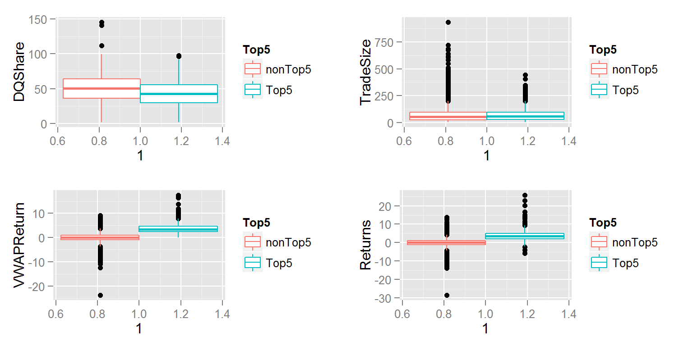
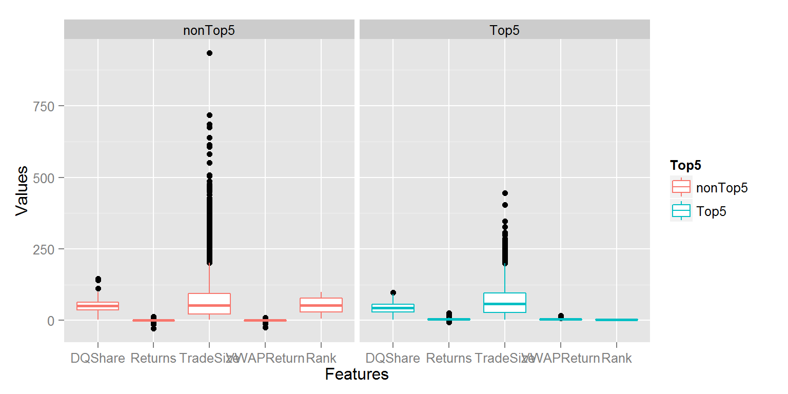
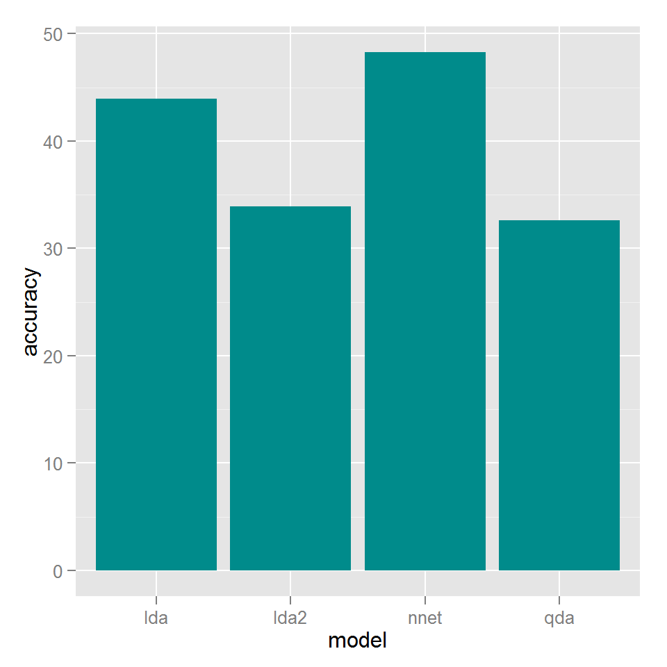

require(caret)
require(dplyr)
require(tidyr)
load('input.RData')
summary(eqcnx100adj)## Date Ticker Close
## Min. :2014-01-01 00:00:00 Length:29000 Min. : 55.1
## 1st Qu.:2014-04-16 00:00:00 Class :character 1st Qu.: 232.6
## Median :2014-07-31 12:00:00 Mode :character Median : 461.7
## Mean :2014-08-03 08:21:31 Mean : 1037.0
## 3rd Qu.:2014-11-24 00:00:00 3rd Qu.: 1079.9
## Max. :2015-03-09 00:00:00 Max. :27117.7
## PrevClose VWAP DQShare Returns
## Min. : 55.1 Min. : 55.08 Min. : 1.901 Min. :-28.5600
## 1st Qu.: 232.2 1st Qu.: 232.92 1st Qu.: 35.574 1st Qu.: -1.0100
## Median : 460.8 Median : 461.94 Median : 50.249 Median : 0.0700
## Mean : 1035.0 Mean : 1037.71 Mean : 49.629 Mean : 0.1485
## 3rd Qu.: 1078.4 3rd Qu.: 1080.44 3rd Qu.: 63.498 3rd Qu.: 1.2300
## Max. :27117.7 Max. :26663.56 Max. :145.616 Max. : 25.7500
## TradeSize VWAPReturn Rank Top5
## Min. : 1.866 Min. :-23.77470 Min. : 1.00 Length:29000
## 1st Qu.: 23.068 1st Qu.: -0.87232 1st Qu.: 25.75 Class :character
## Median : 52.632 Median : 0.09071 Median : 50.50 Mode :character
## Mean : 70.913 Mean : 0.14494 Mean : 50.50
## 3rd Qu.: 94.206 3rd Qu.: 1.11004 3rd Qu.: 75.25
## Max. :934.764 Max. : 17.51220 Max. :100.00gridExtra::grid.arrange(ggplot(eqcnx100adj, aes(x = 1, y = DQShare, col = Top5)) + geom_boxplot(), ggplot(eqcnx100adj, aes(x = 1, y = TradeSize, col = Top5)) + geom_boxplot(), ggplot(eqcnx100adj, aes(x = 1, y = VWAPReturn, col = Top5)) + geom_boxplot(), ggplot(eqcnx100adj, aes(x = 1, y = Returns, col = Top5)) + geom_boxplot(), nrow = 2)
eqcnx100adj[,-c(3:5)] %>%
#select(DQShare:VWAPReturn, Top5) %>%
gather(Features, Values, -c(Top5, Date, Ticker)) %>%
ggplot(aes(x = Features, y = Values, col = Top5)) +
geom_boxplot() + facet_wrap( ~ Top5)
trainSet = eqcnx100adj[1:24400, -10]
testSet = eqcnx100adj[24401:29000, -10]
ldaModel = train(factor(Top5) ~. - Date - Ticker , data = trainSet, method = 'lda')
pred.lda = predict(ldaModel, testSet)
ldaModel2 = train(factor(Top5) ~ DQShare + Returns + TradeSize, data = trainSet, method = 'lda')
pred.lda2 = predict(ldaModel2, testSet)
qdaModel = train(factor(Top5) ~. - Date - Ticker, data = trainSet, method = 'qda')
pred.qda = predict(qdaModel, testSet)
nnetModel = train(factor(Top5) ~. - Date - Ticker, data = trainSet, method = 'nnet')
pred.nnet = predict(nnetModel, testSet)
results = cbind(testSet$Top5, as.character(pred.lda), as.character(pred.lda2),
as.character(pred.qda), as.character(pred.nnet))
colnames(results) = c('testSet', 'pred.lda', 'pred.lda2', 'pred.qda', 'pred.nnet')
results = as.data.frame(results)
intSet = results[results$testSet=='Top5', ]
accuracy = 100* c(sum(intSet$testSet == intSet$pred.lda)/NROW(intSet),
sum(intSet$testSet == intSet$pred.lda2)/NROW(intSet),
sum(intSet$testSet == intSet$pred.qda)/NROW(intSet),
sum(intSet$testSet == intSet$pred.nnet)/NROW(intSet))
accuracy = as.data.frame(accuracy)
accuracy$model = c('lda', 'lda2', 'qda', 'nnet')
ggplot(accuracy, aes(x = model, y = accuracy)) +
geom_bar(stat = 'identity', fill = 'cyan4')